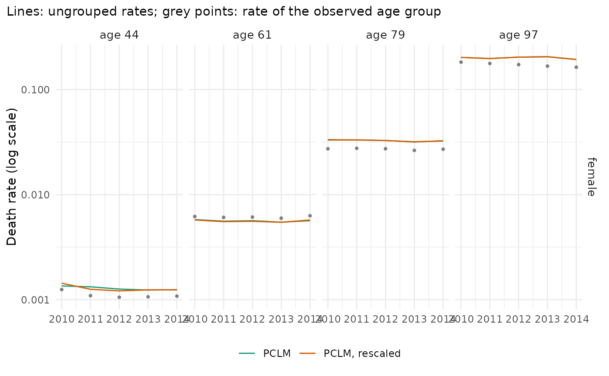

Checks of single-year (grid) data estimated from grouped observations by
mt_ungroup(), for one method or several side by side.
Usage
mt_plot_ungroup(
data,
ungrouped,
period = NULL,
strata = NULL,
type = c("profile", "time", "error"),
ages = NULL,
reference = NULL
)
mt_ungroup_check(ungrouped, reference = NULL, bands = NULL)Arguments
- data
The grouped mt_data that were ungrouped.
- ungrouped
A result of
mt_ungroup(), or a named list of results (one per method or setting).- period
Period of the profile (default: the last).
- strata
Stratum labels to show (default: all).
- type
"profile","time"or"error".- ages
Ages shown with
type = "time"(default: four ages spread over the grid).- reference
An mt_data object with the known deaths and exposures on the grid of
ungrouped(fortype = "error"and the errors ofmt_ungroup_check()).- bands
Lower bounds of the age bands of
mt_ungroup_check()(default: 0, 15, 45, 65 and 85, as far as the grid covers them).
Value
A ggplot object; mt_ungroup_check() a data.table with one
row per method (and age band, with reference).
Details
mt_plot_ungroup(type = "profile"): the observed group rates (grey steps) and the ungrouped rates (lines) over age in one period. The ungrouped rates should change smoothly and pass close to the steps (exactly through their exposure-weighted means only withpreserve_totals = TRUEor the monotone method).type = "time": the ungrouped rates of a few ages over the periods (log scale), with the known rates ofreferenceas points or, withoutreference, the rate of the observed group that contains each age (grey points). One-dimensional ungrouping fits every year separately, so single ages can jump from year to year; two-dimensional ungrouping smooths over time as well.type = "error": where the single years are known (reference, for example data that were grouped for the check), the log ratio of the ungrouped to the known rates by age, one panel per method: the median over periods and strata (line) and the range of the middle 80% (coloured band). The known rates contain Poisson noise, so even perfect estimates scatter around zero; the grey band shows the middle 80% of that noise (plus or minus 1.28 standard errors of a log rate,1 / sqrt(deaths)). Errors within the grey band cannot be told apart from noise.mt_ungroup_check()summarises the fits: the share of fits whose smoothing parameter is at the boundary of its search range (at_bound), the largest relative gap between fitted and observed group totals before any rescaling (max_rel_gap) and, withreference, by age band the median absolute log error (mae_log), the same for the Poisson noise of the known rates (noise_log, the error that perfect estimates would have) and the median signed log error (bias_log).
Examples
x <- mt_example(years = 2010:2014)
u <- list(PCLM = mt_ungroup(x), "PCLM, rescaled" = mt_ungroup(x, preserve_totals = TRUE))
mt_ungroup_check(u)
#> method at_bound max_rel_gap
#> <fctr> <num> <num>
#> 1: PCLM 0 0.06689987
#> 2: PCLM, rescaled 0 0.06689987
if (requireNamespace("ggplot2", quietly = TRUE)) {
mt_plot_ungroup(x, u, strata = "female")
mt_plot_ungroup(x, u, type = "time", strata = "female")
}
